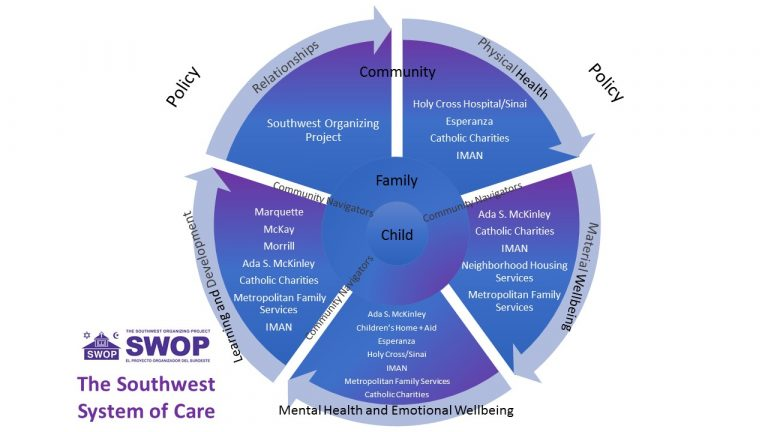
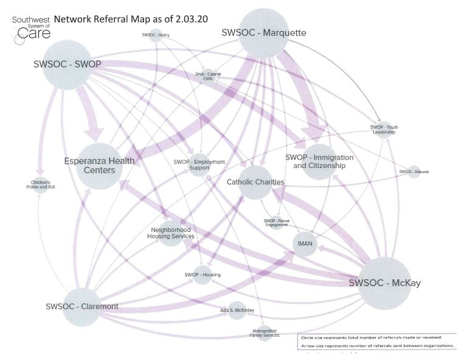

Salud - SWSOC
Salud
SWOP se asocia con Holy Cross Hospital y Esperanza Health Center para garantizar el acceso de la comunidad a atención médica de alta calidad. Además, SWOP completó recientemente un plan de salud para toda la comunidad que detalla el trabajo a realizar para mejorar los resultados de salud de los residentes del vecindario. Las actividades incluyen trabajar para mejorar el acceso y la asequibilidad de la atención médica para los indocumentados; trabajar para aumentar y educar a los residentes sobre cómo navegar por el sistema de salud para que puedan tomar las mejores decisiones para sus familias; trabajar para promover la viabilidad a largo plazo de las instituciones de salud en la comunidad; y trabajar para promover el acceso al seguro médico. En el pasado, SWOP ha ayudado a las familias a inscribirse en el seguro ACA y AllKids.
Southwest Systems of Care
El Southwest Organizing Project (SWOP) organizó una Red del Sistema de Atención del Sudoeste (SWSOC). SWOP utilizó un modelo de organización comunitaria para la construcción de relaciones para reunir a los proveedores de servicios sociales, de salud y de salud mental con escuelas, proveedores extracurriculares, programas de desarrollo de liderazgo juvenil y otros para satisfacer las necesidades integrales y aprovechar los activos de las comunidades. 'los jóvenes y sus familias.

SWOP cree que al reunir a estos socios para coordinar y colaborar en la atención, los jóvenes recibirán mejores servicios, más alineados con sus necesidades y deseos y, al mismo tiempo, tendrán los impactos importantes de mejorar las escuelas e instituciones, mejorar las relaciones y mejorar el bienestar general de la comunidad. ser. SWOP tiene como objetivo utilizar el aprendizaje de la implementación de SWSOC para impulsar cambios de política que mejorarán la prestación de servicios.
Actualmente, los navegantes de SWSOC están construyendo relaciones y apoyando a las familias en las comunidades de las escuelas primarias Claremont, Edwards, Hurley, Marquette y McKay. Desde el lanzamiento del piloto en marzo de 2019, SWSOC ha guiado conexiones entre más de 350 familias y apoyos y servicios ofrecidos por instituciones asociadas. 
El desarrollo de estas conexiones se puede ver en el crecimiento de los mapas de referencia de red a continuación que muestran las formas en que las relaciones han evolucionado a lo largo de la fase de implementación completa del SWSOC desde septiembre de 2019 hasta enero de 2020.
Para obtener más información, comuníquese con Jessica Biggs en jbiggs@swopchicago.org.